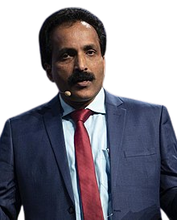

Indian Space Research Organisation (ISRO) is the space agency of India. The organisation is involved in science, engineering and technology to harvest the benefits of outer space for India and the mankind. ISRO is a major constituent of the Department of Space (DOS), Government of India. The department executes the Indian Space Programme primarily through various Centres or units within ISRO. ISRO was previously the Indian National Committee for Space Research (INCOSPAR), set up by the Government of India in 1962, as envisioned by Dr. VikramA Sarabhai. ISRO was formed on August 15, 1969 and superseded INCOSPAR with an expanded role to harness space technology. DOS was set up and ISRO was brought under DOS in 1972. The prime objective of ISRO/DOS is the development and application of space technology for various national needs. To fulfil this objective, ISRO has established major space systemsfor communication, television broadcasting and meteorological services; resources monitoring and management; space-based navigation services. ISRO has developed satellite launch vehicles, PSLV and GSLV, to place the satellites in the required orbits. Alongside its technological advancement, ISRO contributes to science and science education in the country. Various dedicated research centres and autonomous institutions for remote sensing, astronomy and astrophysics, atmospheric sciences and space sciences in general function under the aegis of Department of Space. ISRO's own Lunar and interplanetary missions along with other scientific projects encourage and promote science education, apart from providing valuable data to the scientific community which in turn enriches science. ISRO has its headquarters in Bengaluru. Its activities are spread across various centres and units. Launch Vehicles are built at VikramSarabhai Space Centre (VSSC), Thiruvananthapuram; Satellites are designed and developed at U R Rao Satellite Centre (URSC), Bengalure; Integration and launching of satellites and launch vehicles are carried out from Satish Dhawan Space Centre (SDSC), Sriharikota; Development of liquid stages including cryogenic stage is carried out at Liquid Propulsion Systems Centre (LPSC), Valiamala& Bengaluru; Sensors for Communication and Remote Sensing satellites and application aspects of the space technology are taken up at Space Applications Centre (SAC), Ahmedabad and Remote Sensing satellite data reception processing and dissemination is entrusted to National Remote Sensing Centre (NRSC), Hyderabad. The activities of ISRO are guided by its Chairman, who would also be the secretary of DOS and Chairman of Space commission – the apex body that formulates the policies and overseas the implementation of the Indian Space Programme.
About Us

Mr. S. Somanath